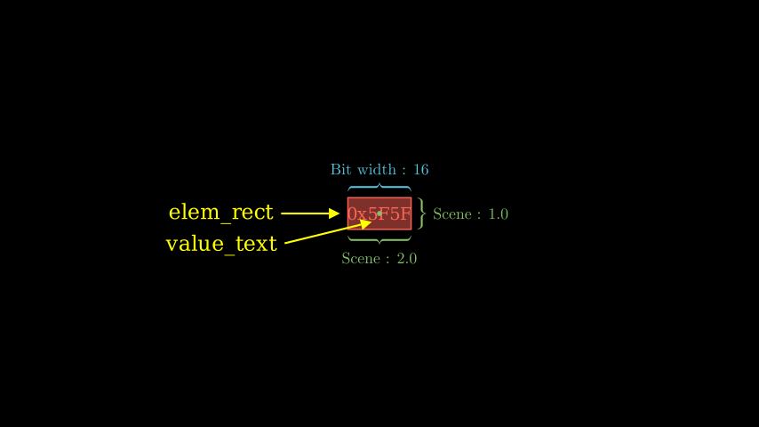
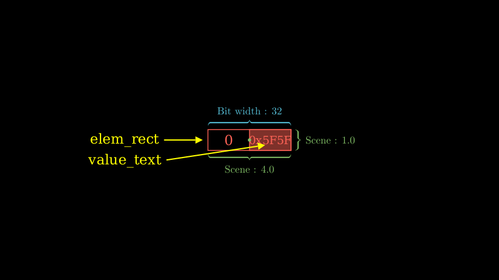

Element Unit
isa_manim.isa_objects.one_dim_reg_elem presents one element in registers, function units and memory units. This object can be used to present data reading from/writing to one register, moving between registers, function units and memory units.

Source code: test_elem_unit.py
As shown in the above figures, one element unit contains the following Manim objects:
- elem_rect presents the element.
- The width of elem_rect presents the bit width of the register.
- The height of elem_rect is 1.0.
- In a normal situation, elem_rect is filled with the same color as the boundary and opacity is set to 0.5.
- value_text presents the value of the element, which is centrally aligned with elem_rect.
In the case of zero-extend, some MSBs are forced to zero. In this case, the element unit contains four Manim objects:
- elem_rect still presents the element as above. But the elem_rect is transparent.
- Another Rectangle object fill_elem_rect is used to cover the non-zero bits.
- value_text presents the value of the element, which is centrally aligned with fill_elem_rect.
- Another Text object fill_value_text with a string of "0" is used to cover the zero bits.

Source code: test_elem_unit_zero.py
fill_elem_rectandfill_value_textare not public members.The origin point is located in the center position of
elem_rectas same as the center position of this object.
Element units can maintain a value as a normal variable. The value is specified by the option value in the constructor function. The value can be read out by public member elem_value. To simplify predicate cases, __bool_ is overridden so that element units can be directly used after if.
If one element has been assigned a valid value, the value will be displayed. The format to print the value is defined by a format string as Python. For example, ":d" means decimal format and "0x:x" means hexadecimal format. The value format is specified by the option value_format in the constructor function.
ElemUnit
Bases: VGroup
Object for register element.
Attributes:
| Name | Type | Description |
|---|---|---|
elem_rect |
Rectangle
|
Rectangle of element unit. |
value_text |
Text
|
Text of element value. |
elem_color |
Color
|
Color of element rectangle and value text. |
elem_width |
int
|
Bit width of element. |
elem_value |
Any
|
Value of this element. |
elem_fill_opacity |
float
|
Fill opacity of this element. |
elem_font_size |
int
|
Font size of value text. |
elem_value_format |
str
|
Format to print data value. |
elem_high_bits |
int
|
Specify a number of Most significant bits. |
elem_high_zero |
bool
|
True means the higher part of the register is forced to zero. |
require_serialization = False
class-attribute
instance-attribute
Animation related with this object does not need to be serialized.
__bool__()
Return whether the value of element is True of False. Used by predicate mask.
__init__(color, width, value, fill_opacity, font_size, value_format, high_bits, high_zero)
Constructor an element.
Parameters:
| Name | Type | Description | Default |
|---|---|---|---|
color |
Color
|
Color of this element. |
required |
width |
int
|
Width of this element, in bit. |
required |
value |
Any
|
Value of this element, which should be Any type rather than array. |
required |
fill_opacity |
float
|
Fill opacity of this element. |
required |
font_size |
int
|
Font size of value text. |
required |
value_format |
str
|
Format to print data value. |
required |
high_bits |
int
|
Specify a number of Most significant bits. |
required |
high_zero |
bool
|
True means the higher part of the register is forced to zero. |
required |
get_elem_pos(offset, elem_width)
Return the center position of another element that is right-aligned with current element.
offset specifies the offset of the lowest bit.
Parameters:
| Name | Type | Description | Default |
|---|---|---|---|
offset |
int
|
Offset of lower bits. |
required |
elem_width |
int
|
Width of element in bits. |
required |
Returns:
| Type | Description |
|---|---|
ndarray
|
Position of the specified element. |
get_placement_height()
Return the height of this object for placement. The height is ceil to an integer.
Returns:
| Type | Description |
|---|---|
int
|
The height of this object. |
get_placement_mark()
Return the marker of this object, which is 2.
Returns:
| Type | Description |
|---|---|
int
|
Marker of this object. |
get_placement_width()
Return the width of this object for placement. The width is ceil to an integer.
Returns:
| Type | Description |
|---|---|
int
|
The width of this object. |
set_placement_corner(row, col)
Set the position of object by the left-up corner position. Move object to the specified position.
Parameters:
| Name | Type | Description | Default |
|---|---|---|---|
row |
int
|
Vertical ordinate of left-up corner. |
required |
col |
int
|
Horizontal ordinate of left-up corner. |
required |